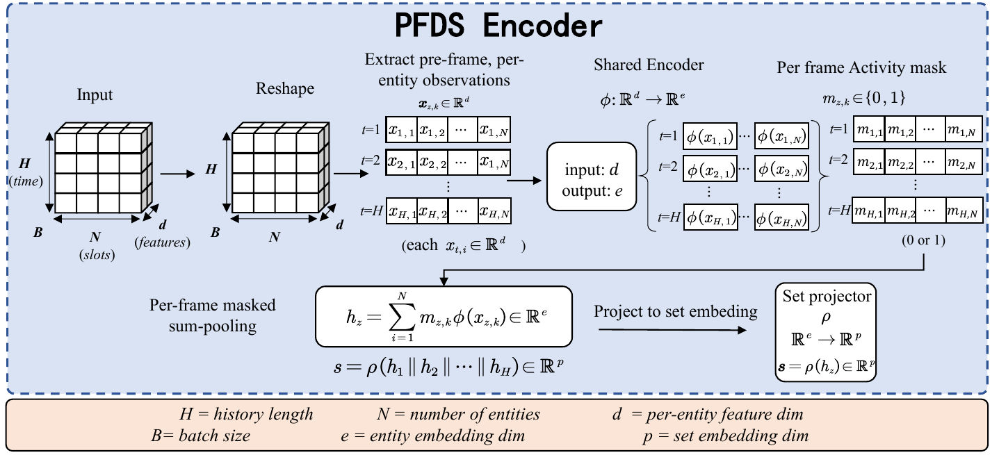
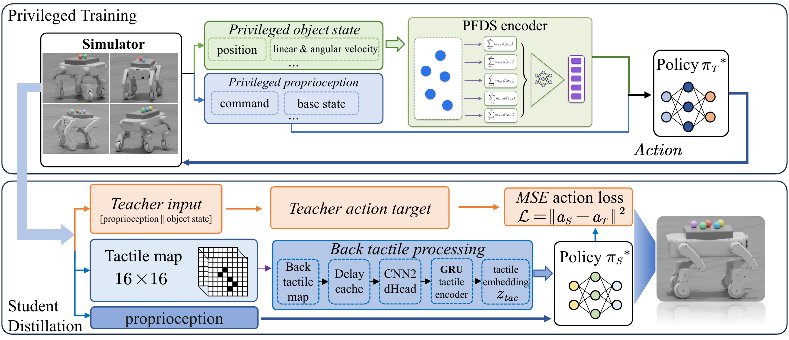
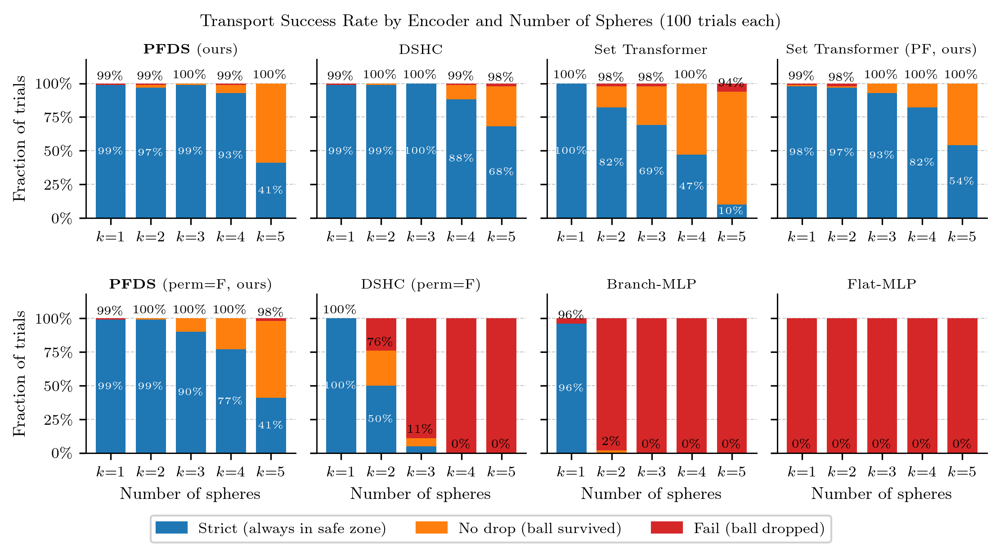
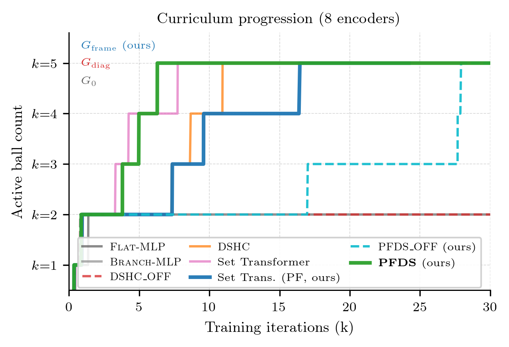
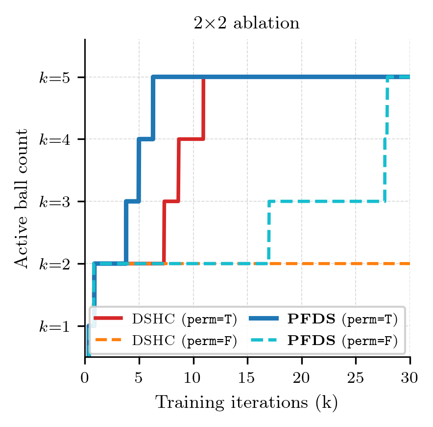
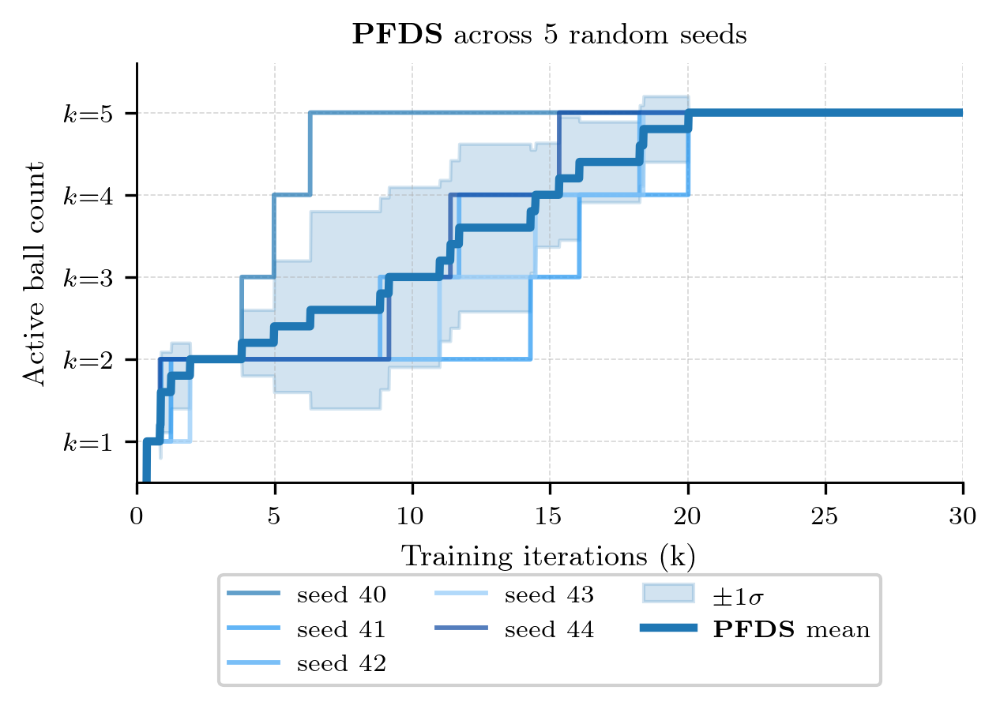
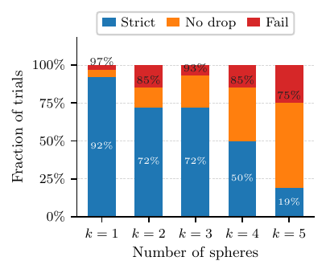

Abstract
We study the problem of scaling dynamic loco-manipulation from a single free-rolling sphere to multiple spheres transported simultaneously on the back of a wheel-legged quadruped, without fences, grippers, or mechanical stops. Multiple identical free-rolling spheres form an unordered set with no persistent identity: their ordering may change independently at each history frame, creating a per-frame permutation symmetry that standard history-concatenation set encoders do not explicitly enforce—these encoders impose only a shared, diagonal permutation symmetry over the full history.
We show that this symmetry mismatch leads to a concrete failure mode in curriculum-based reinforcement learning. Within the same PPO training budget, flat MLPs and branch-wise encoders plateau at or below the two-sphere stage, while a history-concatenation Deep Sets baseline (DSHC) exhibits the same failure unless ball-to-slot assignments are randomized during training, suggesting that it exploits slot indices as a curriculum shortcut rather than learning identity-free multi-sphere dynamics.
We propose Per-Frame Deep Sets (PFDS), which performs permutation-invariant pooling within each history frame before temporal readout, achieving intrinsic invariance to independent per-frame permutations. A 2×2 ablation over encoder architecture and slot randomization separates the architectural and data-augmentation pathways to robust multi-sphere transport. Finally, we distill the PFDS teacher into TactSet via DAgger, replacing privileged sphere-state observations with a 16×16 Boolean union contact map, yielding a compact and naturally permutation-invariant tactile representation evaluated in simulation.
Main Contributions
- A symmetry-mismatch diagnosis. We formalize multi-sphere transport as a Gframe-invariant policy learning problem and derive the quotient ratio (N!)H−1— about 1.7×106 for N=5 spheres and H=4 history frames — as a quantitative measure of the non-physical redundancy that standard history-concatenation encoders fail to collapse.
- The PFDS encoder. A minimal modification of Deep Sets that pools within each history frame before temporal readout, achieving intrinsic per-frame permutation invariance. We back this with formal proofs of Gframe-invariance and universal approximation.
- Architecture vs. augmentation, untangled. An eight-encoder comparison plus a 2×2 ablation (encoder × slot randomization) cleanly separates the architectural pathway from the data-augmentation pathway to multi-sphere robustness. Five-seed runs confirm PFDS reliability.
- TactSet: tactile distillation. A DAgger-distilled student that replaces privileged ball-state observations with a 16×16 Boolean contact map — naturally permutation-invariant by construction — achieving 75% no-drop transport of five spheres in simulation.
Our Method in a Nutshell
The problem. When a quadruped carries multiple identical free-rolling spheres, the observation tensor X ∈ ℝH×N×d indexes balls by an arbitrary slot id at each of H history frames. Because the balls are identical, swapping two slot assignments in any single frame produces a physically equivalent state — so the correct symmetry group is the per-frame product Gframe = (SN)H. Standard Deep Sets applied to history-concatenated tokens only respect the much smaller diagonal subgroup Gdiag, leaving (N!)H−1-fold non-physical variation that the policy must learn to ignore from scratch.
PFDS (Per-Frame Deep Sets). We change where the pooling happens, not how big the network is. A shared MLP φ embeds each per-ball feature, masked sum pools within each frame t to a frame embedding ht, and a temporal MLP ρ reads out [h1; …; hH]. This single re-ordering of operations makes the encoder intrinsically invariant to independent per-frame slot permutations, collapsing the entire Gframe orbit to one representation.
Training & distillation. The PFDS teacher is trained in Isaac Lab with PPO under a multi-criterion curriculum that gradually increases the sphere count from 1 to 5. We then distill the teacher into TactSet via DAgger, replacing the privileged ball state with a 16×16 Boolean union contact map — the same physical contacts visible to a real tactile array. Because the Boolean union is symmetric in its arguments, the tactile observation is Gframe-invariant by construction, semantically aligning the student input with the teacher's quotient representation.
Per-Frame Deep Sets (PFDS) Encoder

The core idea. Per-object observations xt,i are pooled independently within each history frame t to produce frame embeddings ht; these are then concatenated and processed by the temporal readout MLP ρ. Because pooling occurs within each frame, the encoder is intrinsically invariant to independent per-frame permutations (Gframe-invariant) — collapsing the (N!)H−1 non-physical redundancy left by standard history-concatenation encoders.
System Architecture

Top: privileged teacher training. The PFDS teacher is trained in Isaac Lab with PPO using privileged object-state observations (position, linear/angular velocity).
Bottom: tactile-student distillation. TactSet is distilled via DAgger, replacing the privileged observation with a 16×16 Boolean union tactile contact map.
Multi-Sphere Transport Demos
A single PFDS teacher policy transports up to five identical free-rolling spheres simultaneously on the unfenced back plate of the S3 wheel-legged robot. Each video shows the same policy evaluated with a different sphere count.
Encoder Comparison

Eight-encoder comparison. Flat MLP, Branch-MLP, history-concatenation Deep Sets (DSHC), and PFDS differ in how they impose permutation structure across history. Only PFDS achieves intrinsic Gframe-invariance.
Results
A summary of the four headline experiments. Full numbers, ablations, and confidence intervals are in the paper.




BibTeX
@inproceedings{s2mtrek2026,
title = {S2M-Trek: From Single to Multi-Sphere Transport via Per-Frame Deep Sets on a Wheel-Legged Robot},
author = {Anonymous},
booktitle = {Conference on Robot Learning (CoRL)},
year = {2026},
note = {Under review}
}